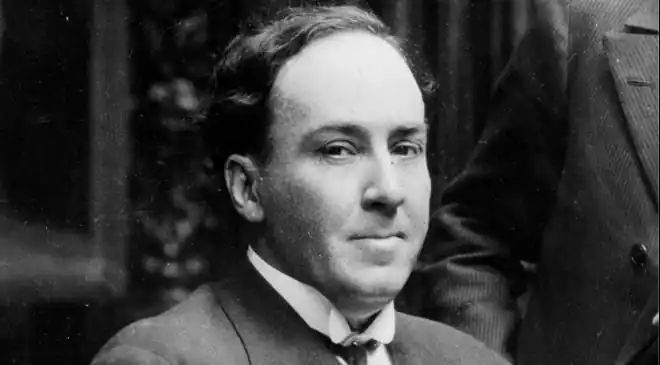
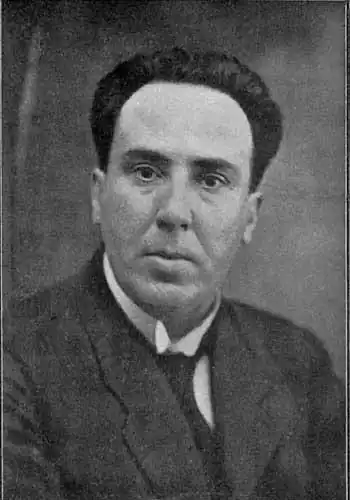

МАЧАДО-І-РУЇС, Антоніо (Machado у Ruiz, Antonio — 26.07.1875, Севілья — 22.02.1939, Кольюр, Франція) — іспанський поет.Мачадо-і-Руїс народився у сім'ї фольклориста А. Мачадо Альвареса. Разом із сім'єю переїхав у Мадрид, де закінчив Вільний інститут освіти, а також студіював філософію та літературу у Мадридському університеті. З 1898 до 1901 р. мешкав у Парижі, де заробляв на прожиток перекладами. У Парижі Мачадо-і-Руїс познайомився з Р. Даріо.
У 1903 р. вийшла друком перша книжка Мачадо-і-Руїса "Самотність"("Soledades"), у 1907 р. — збірка "Самотність. Галереї. Інші поезії" ("Soledades, galerias у otras poemas"), яка, за зізнанням самого поета, нічого не додавала до книжки "Самотність" і утворювала з нею єдине ціле. Обидві ці збірки є першим етапом творчості Мачадо-і-Руїса. У цей період поет перебував під значним впливом П. Вердена і, почасти, кумира "покоління 98 року" — P. Даріо. Велике значення мала для нього у цей час і філософія А. Шопенґауера. Але попри все Мачадо-і-Руїс виявив оригінальний підхід і оригінальні риси свого обдарування. "Я гадаю, що першоосновою поезії є не звучання слова, не колір, не лінія, не сукупність відчуттів, а глибоке трепетання духу, те, що вкладає душа у свій відгук на зіткнення із зовнішнім світом..." — стверджував поет.
У 1907 р. Мачадо-і-Руїс отримав кафедру французької мови в Інституті в Сорії. Переїзд у Кас-тилію відіграв значну роль у його творчій біографії. У 1909 р. він одружився із 16-літньою Леонор. Разом із дружиною Мачадо-і-Руїс здійснив нову подорож у Париж. У 1912 р. з'явилася збірка "Поля Кастилії" ("Campos de Castilla"), з уже більш конкретизованим образом батьківщини і новою темою народу. У таких довершених і яскравих віршах, як "По землях Іспанії", "Береги Дуеро", "На березі Дуеро", "Поля Сорії", поет розмірковує про долю Іспанії, про її минуле і теперішнє. Осібно у збірці стоїть невелика "Поема одного дня", присвячена будням містечкового вчителя, та цикл романсів "Земля Альвара Гонсалеса" ("La tierra de Alvargonzalez"), у яких поет на прикладі доль героїв — селянина Альвара Ґонсалеса і трьох його синів намагається виразити народні уявлення про добро та зло. У 1924 р. Мачадо-і-Руїс видав збірку "Нові пісні" ("Nuevas canciones"), яка продовжила "Поля Кастилії". Прикметно, що він і тут використав народнопоетичні форми, які випереджають цим поезію Ф. Гарсія Лорки. Після важкої життєвої драми — смерті у 1912 р. від важкої хвороби легень дружини, Мачадо-і-Руїс, за слушним зауваженням І. Тертеряна, відчував пекучий біль від усвідомлення смертності всього сущого, і лише любов якоюсь мірою вказувала вихід із цього замкнутого кола. У цей час поет познайомився із заміжньою жінкою, котра стала його останнім коханням. Мачадо-і-Руїс оспівав її під вигаданим іменем Гіомар. Мачадо-і-Руїс писав не тільки від свого імені. Свої вірші він приписував вигаданому поету Абелю Мартіну та його учневі, також поету, але при цьому й філософу, професору Хуану де Майрені. Хуан де Майрена не лише віршує, а й навчає мудрості та пише прозу. Обидва вони наділені біографіями, характерами, своїм колом інтересів, "їхні" вірші ввійшли у збірку "Апокрифічний пісенник" ("Cancionero Арбсгію", 1924—1926), де Мачадо-і-Руїс розвиває екзистенціалістську концепцію життя та смерті. У збірці є і "вірші-сни". Проте хоча герой і героїня кохають одне одного, їхньому коханню не судилося бути щасливим сном, оскільки вони — всього лише "дві самотності". У збірці "Розмови Хуана Майрени" ("Habla Juan de Mairena a sus alumnos"), яку поет розпочав писати у 1928 p., головний герой веде розмови з питань політики та філософії, естетики та літератури. У 1936 р. вийшов друком перший том прози М.-і-Р. під назвою "Хуан де Майрена. Сентенції, погляди, зауваги та спогади одного апокрифічного професора". Цим ім'ям Мачадо-і-Руїс і в подальшому підписував свої статті та замітки, об'єднані вже посмертно у другий том "Хуана де Майрени". У 1932 р. Мачадо-і-Руїс переїхав у Мадрид, де його й захопила громадянська війна. Вірші та проза цього часу ввійшли у збірку "Війна"("1я Guerra", 1937). Значне місце у ній приділено формі сонета, одним із найкращих з-поміж яких вважають "Смерть пораненої дитини": Знов ніч... пошерхли спалені уста,гарячка гатить молотом у скронідитини. — Мамо, пташка золота,метелики рожеві і червоні!— Спи, синку мій... Засни бодай на мить...—А рученьки немов кричать: "Спасіте!" Скажи ж мені, хто може остудитьтебе, моєї крові ясний цвіте?!Надворі тихо мерехтять зірки,біліє, наче купол, місяць молод,невидимі гуркочуть літаки.— Моєї крові ти квітучий солод... Чи спиш?.. — Лякливо дзеленчать шибки.— О холод, холод, холод, холод, холод!(Пер. Д. Павличка)Хоча він просився на фронт, але республіканці хотіли вберегти свого поета. Разом із матір'ю його відправили у безпечне місце, у Валенсію, а коли ситуація стала катастрофічною — у Барселону. Згодом довелося покинути і Барселону. Вночі 27 січня 1939 р. Мачадо-і-Руїс із групою інших республіканців перетнув французький кордон, а 22 лютого цього ж року він помер у сільській гостиниці французького містечка Кольюр. У кишені його плаща знайшли клаптик паперу з єдиним рядком: "Ці дні барвінкові, це сонце мойого дитинства..." Українською мовою окремі вірші Мачадо-і-Руїса переклали Д. Павличко, Г. Кочур, С. Борщевський, Г. Чубай, Г. Козаченко, Г. Латник, І. Качуровський та ін. За Л. Штейном